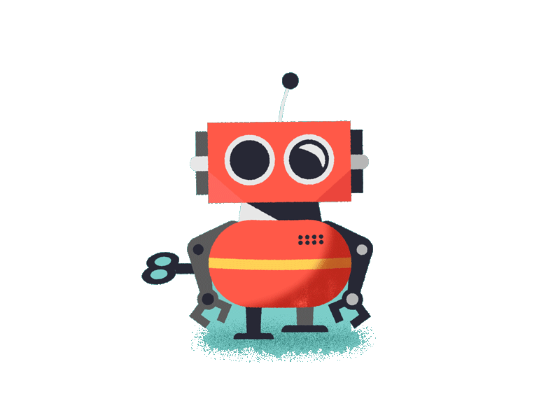

Welcome to Nono the Robot!
About
L’objectif de l'application est de trouver les bonnes valeurs pour déplacer Nono (le robot). Il sera capable
de se déplacer, manger et regarder dans l’environnement.
Les capteurs utilisés dépendent des exigences du robot. Les exigences pourraient être par exemple calculer la distance
d’un objet, la détection et la proximité.
A vous de jouer !
Back
